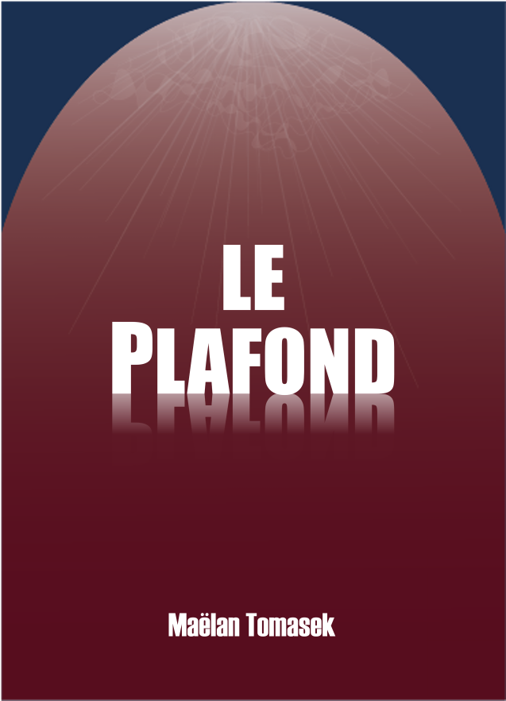

About Me
I am a Doctor both in comparative psychology (PhD) and veterinary medicine (DVM). I study animal behaviour and cognition, trying to decipher how intelligence evolves.
I am interested in how animals perceive and act in their environments, especially in aquatic systems. I design puzzles and games (formally known as cognitive tasks) to assess the intelligence of my study species. From the shores of Lake Tanganyika to the sea grass beds of the Mediterranean Sea, my research has led me to wondrous places to interact with the most amazing species, such as cichlids, wrasses, bream, rooks and cuttelfish.
As a vet, I am invested in animal welfare and the ethics of animal research, aiming to improve societal and research practices.
Finally, I am deeply invested in science communication. Among other projects, I have recently become an author — my debut novel Le Plafond ( The Ceiling ) was published in 2025.

Le Plafond — The Ceiling
Are you ready to change the way you view difference? A science-fiction novel that will bring you to a new and intriguing world.
🏆 Shortlisted for the Librinova Star Prize 2025 · Available in French
Librinova Fnac Amazon Learn more →